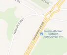
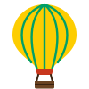

איך המפה נראית

במה טסים?
תצוגה מוכנה
תכנון ובנייה
עוד
טוען…
מי שיפתח את הקישור יראה בדיוק את מה שעל המסך שלך: המקום, הזום, השכבות, הרקע, מה שנבחר, והרשימה פתוחה או מוסתרת.
מה מוצג על המפה וברשימה. אפשר להתחיל מתצוגה מוכנה: